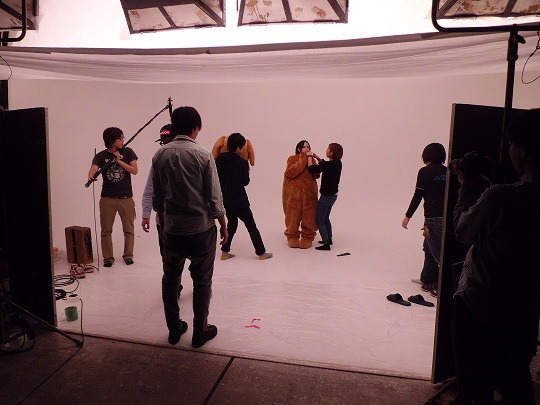

| 2012/05 23 Wed | ひめたん大図鑑１７だよ（2012 年２月) |

リクエストにお答えして、今日の二行日記。
世界史と物理のテストがんばった。
ままとランチした。お昼寝した。夜は数学頑張る!
ふぁみりーさんひめきゅんさん
いつもありがとーう＼(^O^)／!
400
 個別握手会当たったので楽しみにしてますね
個別握手会当たったので楽しみにしてますね
個別握手会当たったので楽しみにしてますね
緊張せずに喋れるコツとかありますか？
緊張しぃなひめたんにいい答えを期待しないでほしいけどー、
とにかく、自分の妹さんとか兄弟さんと話すときって緊張せんよね!
そのノリで来てくれたらおっけーだと思う∩^ω^∩★
401
握手券無事当選したよひめたんと何はなそうかなぁ〜
握手券無事当選したよひめたんと何はなそうかなぁ〜
ノープランで行っても大丈夫(´・ω・`)?←
ひめたんだってノープランだから大丈夫(`・ω・')←え
...。間違えた
ひめたんがいろいろ話題考えとくから大丈夫っ!!!!!
402
決済も済ませて来たよ。これって、ひめたん喜ぶかな?花奈?(笑)
決済も済ませて来たよ。これって、ひめたん喜ぶかな?花奈?(笑)
喜ぶカナ?喜ぶかもしれない
ウソ喜ぶ＼(^∀^)／!!!
403
個別握手会って初めてなんですけど、流れとか、
個別握手会って初めてなんですけど、流れとか、
やってはいけないこと等、注意点を教えて下さい、
ざっくりで構いませんから。
えーっと、それがひめたんにもよくわからんのんよね(>_<)
ひめたんからみなさんにお願い!
握手会経験者の方ー?握手会の注意点やポイントがあったら教えて下さいっ!!!先輩!!!
404
もう自分の名前は覚えてもらえたかなぁ!?
もう自分の名前は覚えてもらえたかなぁ!?
いつもコメントくれるひめきゅんさんなら自信ありますよー♪
握手会とか、会う機会があった時に確かめてみてー＼(^^)／★
405
これからも握手に行き続けて
これからも握手に行き続けて
ひめたんの成長を身近で感じていこうと思ってるんだけど良いかな〜?笑
んあーそうしてくださいっ
ほんまに家族みたいぢゃね(*^^*)
ひめたんね、もう背は伸びんと思うけど、頑張って成長するね!
406
２次重視なのでこれからが本番です。
２次重視なのでこれからが本番です。
ひめたんに応援もらえたらすごい頑張れる気がしますのでお願いします!!
とりあえずセンターお疲れ様でした(`・・)ゞ
すごーいほとんどマルじゃないですかー♪
このままトップ成績目指して頑張って下さい!!!
新入学代表挨拶、かっこいいだろうなー(//ω//)
407
ひめたんが思う自分の性格は？
ひめたんが思う自分の性格は？
えー自分どんな性格かわからんけれどもー、
うん。基本きゃぴきゃぴしてて、でも肝心な時はちゃんとやり遂げるって子(ω)
自分で言っちゃう
 わら
わら
わら
408
ブログの題名の顔文字 (*ゝω・*)ノ 『ノ』の部分が、その５０までは全角、
ブログの題名の顔文字 (*ゝω・*)ノ 『ノ』の部分が、その５０までは全角、
５１からは半角になっているけど、ひめたんは気付いてた？
そーう。それね。
51の時に間違えて半角になっちゃったから
もうしばらくは半角突き通そっかなって思ったの(ω)
でもひめたん的に全角のが好きぢゃけ、
キリがよくなったら全角に戻します//
てかよー細かいとこまで見とるね(^^)!すごーい♪
409
そういえば質問なんですが、
そういえば質問なんですが、
広島時代のperfumeってどういう存在だったんですか。
みんなの憧れだったのかなあ
そうですね。もちろん憧れだったですよ。
残念ながらひめたんとPerfumeさんは在籍期間がかぶらなかったけど、
３人とも謙虚で努力家で、って有名ですよねー？
それは昔から変わってないんだと思う(*^^*)
だからたくさんの方から愛されるんですよね。
ひめたんも見習わねば(`・・)ゝ
410
ひめたんは、自分が大人になったかな?と感じることは何かありますか?
ひめたんは、自分が大人になったかな?と感じることは何かありますか?
ひとりで東京来たよ自分っみたいな
ひとりで時間つぶしてる自分っみたいな
ちっちゃい子が電車で泣いてるのみて心がほっこりする自分っみたいな
東京来てから会社に行くまでのあいだに、大人になったなっていっぱい思う(^^)
みんなと合流したら話は別です(。・ω・。)けろ
411
ペットはかってますか??(｀_´)ゞ
ペットはかってますか??(｀_´)ゞ
残念ながら飼ってないー。飼いたいけど飼えないんです。
いつかヨーキーかチワワ飼うってちっちゃい時から言っとるずっと。
今までは金魚とかハムスターとかおうちにいたことありますよ♪
412
ひめたんは猫派、犬派？
ひめたんは猫派、犬派？
ひめたん犬派(^・エ・)♪
...てらりん(永島聖羅chan)に言ったら
「へーひめたん猫派だと思ったー。」って。
ぢゃけ猫派ってことで=^・ω・^=
413
ひめたんはマツダスタジアムいったことある?
ひめたんはマツダスタジアムいったことある?
試合は見たことないけど行ったことある!
球場ができてすぐの試合ない解放日に球場に遊びに行ったんです♪
今度は試合観戦にも行ってみたいなールールまったくわからんけどー(ω)←
(*´・ω・*)ひめたん
コメント(72)
2012/05/23 20:12